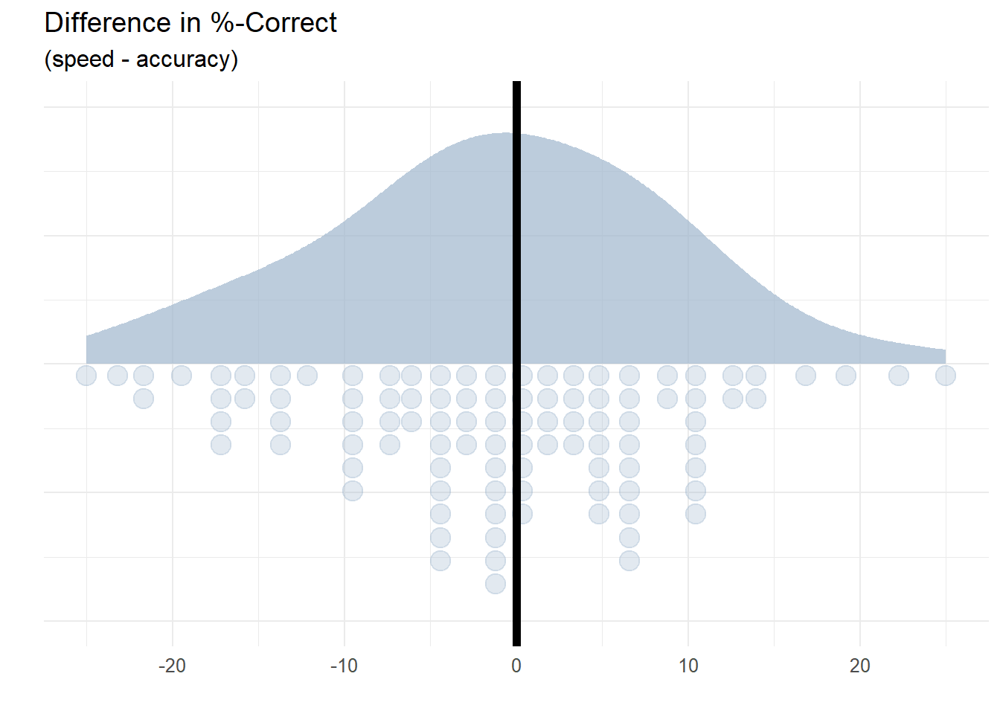
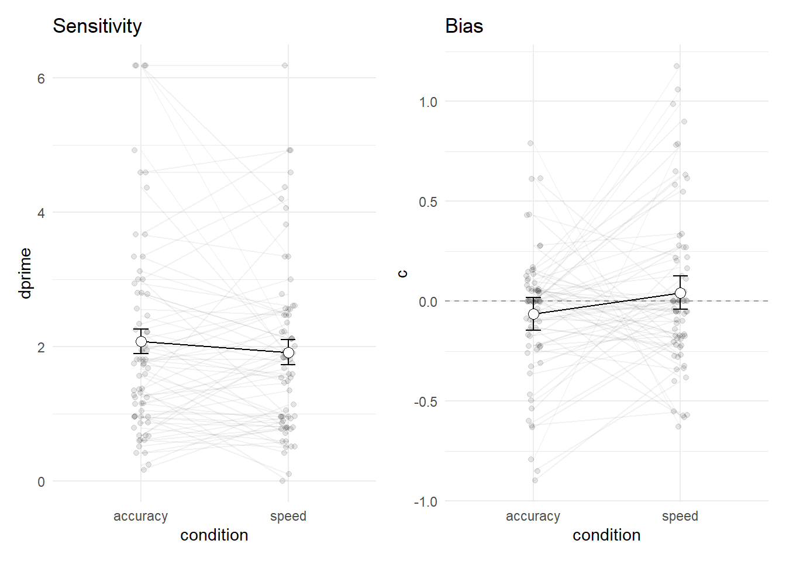

id condition stimulus resp corr
1 sub-007 speed right right 1
2 sub-007 speed left right 0
3 sub-007 speed left left 1
4 sub-007 speed right right 1
5 sub-007 speed left right 0
6 sub-007 speed right left 021 Signalentdeckungstheorie
Die Signalentdeckungstheorie (signal detection theory (SDT)) befasst sich damit, wie aus verrauschten Daten möglichst effizient Informationen extrahiert werden können. Es wird davon ausgegangen, dass in den Daten ein Signal, also relevante Information, enthalten ist, dieses aber durch zufällige Informationen bzw. Rauschen (noise) überdeckt wird. SDT ist somit eine Framework die ermöglicht Entscheidungen unter Unsicherheit zu verstehen und zu modellieren.
Die Signalentdeckungstheorie hat ihren Ursprung in der Psychophysik/Wahrnehmungspsychologie und wurde ursprünglich in den 1950er Jahren von Green & Swets (z.B. Swets, 1964; Green & Swets, 1966) entwickelt. Sie wurde u.a. zur Optimierung von Entscheidungen aufgrund Radarsignalen im 2. Weltkrieg verwendet.
In der Psychologie wird die Signalentdeckungstheorie vor allem in der Wahrnehmungs- und Entscheidungsforschung angewandt. Dabei geht es darum, wie gut eine Person in verschiedenen Situationen in der Lage ist, ein Signal zu erkennen, wie beispielsweise einen Schwellenmessung eines akkustischen oder visuellen Stimulus.
Der Vorteil der Methode ist es, dass unterschieden werden kann, ob ein System/eine Person einen Reiz erkennen kann (Sensitivität) und was das System/die Person für ein Entscheidungsverhalten zeigt (Antworttendenz). Sensitivität bezieht sich auf die Fähigkeit des Entscheidungsträgers, zwischen zwei verschiedenen Arten von Signalen zu unterscheiden, während der die Antworttendenz (bias) die Tendenz des Entscheidungsträgers bezeichnet, eine Alternative gegenüber der anderen a priori zu bevorzugen. Durch die Trennung dieser beiden Komponenten können Forscher analysieren, wie verschiedene Faktoren die Entscheidungsleistung beeinflussen.
In der Signalentdeckungstheorie wird zwischen vier möglichen Ergebnissen unterschieden:
| decision: present | decision: absent | |
|---|---|---|
| signal: present | HIT Signal korrekt erkannt |
MISS Signal fälschlicherweise nicht erkannt |
| signal: absent | FALSE ALARM Signal fälschlicherweise detektiert |
CORRECT REJECTION Signal korrekt als abwesend erkannt |
Daraus folgend können Sensitivität und Antworttendenz wie folgt abgeleitet werden:
Die Sensitivität (sensitivity, \(d'\)), also wie gut eine Person das Signal erkennen kann, enspricht der standardisierten Differenz zwischen den Mittelwerten der Verteilungen Signal präsent und Signal abwesend.
\(d' = z(\)Treffer\() - z(\)falscher Alarm\()\)1
Die Antworttendenz (bias, \(c\)), also ob eine Person eher dazu neigt ein Signal als präsent oder abwesend zu kategorisieren (unabhängig von dessen Anwesenheit) entspricht:
\(c = −0,5*(z(\)falscher Alarm\() + z(\)Treffer\())\)
Beispiel: Random Dot Experiment
Im Random Dot Experiment mussten die Versuchspersonen ein perzeptuelle Entscheidungsaufgabe bearbeiten. Dabei musste jeweils entscheiden werden, in welche Richtung sich eine Punktewolke bewegt.
Die Punktewolke enthielt ein Signal, nämlich den Anteil (ca. 8%) der Punkte die sich in dieselbe Richtung bewegten (kohärente Punkte). Zusätzlich enthielt die Punktewolke aber auch Rauschen, also Punkte, die sich in eine beliebige/zufällige Richtung bewegten. Die Versuchspersonen mussten also unter Unsicherheit eine Entscheidung treffen.
Es gibt verschiedene Möglichkeiten die Leistung der Versuchspersonen im Random Dot Task zu beschreiben, da wir sowohl die Antwortgeschwindigkeit wie auch die Korrektheit der Antworten gemessen haben.
Wir schauen uns in diesem Kapitel zwei Wege an, wie die Korrektheit der Antworten analysiert werden können:
- %-Correct bestimmen
- Sensitivität und Bias mit SDT bestimmen
21.1 %-Correct
Weshalb ist die SDT nützlich? Dies kann am Beispiel des Masses %-Correct aufgezeigt werden. Das Berechnen von %-Correct, also dem Anteil richtiger Antworten innerhalb eines Experiments / einer Person / einer Bedingung, ist ein häufig genutztes Vorgehen, um zu quantifizieren, wie gut Personen eine Aufgabe lösen kann. Sie eignet sich jedoch nur als Mass für Sensitivität, wenn nicht zwischen der Sensitivität und der Antworttendenz unterschieden werden soll.
Für unseren Random Dot-Datensatz können wir den Anteil richtiger Antworten jeder Versuchsperson aufgrund der gegebenen Antworten (resp) bzw. der Variable corr berechnen. Diese entspricht bei richtiger Antwort 1 und bei falscher Antwort 0. Wenn wir den Durchschnitt (mean()) der Variable corr berechnen, erhalten wir den Anteil korrekter Antworten. Wenn wir diese Zahl \(\cdot 100\) rechnen, erhalten wir %-Correct.
Im Experiment wurde die Instruktion (speed und accuracy) innerhalb der Versuchspersonen manipuliert. Es macht daher Sinn, für diese beiden Bedingungen je einen Wert pro Person zu berechnen.
Hands-on: %-Correct berechnen
Erstellen Sie ein neues R-Projekt namens
complab_models. Erstellen Sie im Projektordner einen Ordnerdata.Laden Sie Daten des Random Dot Experiments hier herunter und speichern Sie diese im erstellten Projekt im Ordner
data.Öffnen Sie ein neues R-Skript/RNotebook/RMarkdown
signaldetectionund lesen Sie die heruntergeladenen Daten ein.Berechnen Sie die Sensitivität für jede Versuchsperson individuell getrennt für die beiden Bedingungen
speedundaccuracy(vgl. Output unten).
d_sens = |>
...
...
...# A tibble: 6 × 3
# Groups: id [3]
id condition sens
<chr> <chr> <dbl>
1 sub-007 accuracy 68.3
2 sub-007 speed 66.7
3 sub-010 accuracy 100
4 sub-010 speed 100
5 sub-011 accuracy 91.7
6 sub-011 speed 90 - Der resultierende Datensatz der berechneten Sensitivitäten ist im Long-Format. Überführen Sie den Datensatz in das Wide-Format, um die Daten einfacher verständlich zu machen (vgl. Output unten).

Wir nehmen nicht an, dass sich im Experiment die “Sensitivität” verändert hat, also wie gut eine Person eine Aufgabe lösen kann, sondern viel mehr, dass sich ihr Entscheidungskriterium verändert hat durch die unterschiedliche Instruktion. Tatsächlich finden wir unseren Daten keinen Unterschied. Es könnte aber sein, dass eine Instruktion dazu führt, dass eine Antworttendenz stärker auf die Daten Einfluss nimmt, als in einer anderen. In diesem Fall würde vielleicht eine Antworttendenz von Personen eher rechts als links zu drücken eher Einfluss nehmen, wenn man wenig Zeit hat die Aufgabe zu lösen.
Wenn wir wissen möchten, ob die Aufgabe mit Speed-Instruktion gleich gut lösbar war wie die mit der Accuracy-Instruktion und gleichzeitig wissen möchten, ob die Personen eine Tendenz haben “rechts” oder “links” zu antworten, können wir die SDT anwenden.
21.2 Vorgehen in der SDT
Die SDT ist eine statistische Entscheidungstheorie, deren zentrale Fragestellung lautet: Was ist der (unbekannte) Zustand der Welt, angesichts der verrauschten Daten?
In einem Modell macht es Sinn, sicherzustellen, dass das Problem einfach ist – wir beschränken die Welt auf zwei mögliche Zustände. Dies können beispielsweise sein:
- präsent – abwesend
- rechts – links
- neu/unbekannt – alt/bekannt (in einem Gedächtnisparadigma)
Wir werden das Vorgehen in der SDT anhand unserer eigenen Random Dot Experiment Daten nachvollziehen. Hierfür werden wir das Experiment aus zwei Perspektiven betrachten:
aus der Perspektive einer Person, welche die Aufgabe hat, Stimuli in zwei Klassen zu klassifizieren und
aus der Perspektive eines Modells, das die Leistung der Person in der Aufgabe vorhersagt.
21.2.1 Die Perspektive der Versuchsperson
Wir betrachten ein Experiment, bei dem eine Person einen Stimulus in eine von zwei möglichen Kategorien einordnen muss. Das Random Dot Experiment beinhaltete die Stimuluskategorien Bewegung nach rechts und Bewegung nach links. Die Aufgabe der Person war es, eine binäre Klassifikation mit den Antwortoptionen rechts und links durchzuführen. Die Antwortoptionen entsprechen den beiden möglichen Zuständen der “Welt”, oder genauer gesagt, Hypothesen der Person über die möglichen Zustände der Welt.
Annahmen
Die Person verarbeitet den Stimulus und gelangt zu einer internen Repräsentation des Stimulus. Diese interne Repräsentation ist nicht deterministisch, sondern variiert zufällig und ist demzufolge eine Zufallsvariable \(X\). Wir nehmen an, dass die interne Repräsentation normalverteilt ist.
Die Zufallsvariable \(X\) repräsentiert die Information, die die Person über den Stimulus hat, also die Evidenz.
Die Person weiss, dass \(X\) aus einer von zwei Verteilungen gezogen wurde, die sich nur in ihrer Lage (in ihrem Mittelwert) unterscheiden. Welche Verteilung es war, weiss die Person jedoch nicht – dies muss sie anhand eines Kriteriums entscheiden.
Die Person hat ein Kriterium \(k\), das sie verwendet, um zu entscheiden, ob sich der Stimulus nach
rechtsoderlinksbewegt. Eine einfache Entscheidungsregel lautet: Wenn \(X > k\), dann bewegen sich die Punkte nach rechts, andernfalls nach links.
21.2.2 Die Perspektive des/der externen Beobachter*in
Die Leistung der Versuchsperson kann durch die Wahrscheinlichkeit beschrieben werden, dass sie einen Treffer (Hit) oder einen False Alarm produziert. Diese Wahrscheinlichkeiten werden als Hit Rate und False Alarm Rate bezeichnet. Die Hit Rate ist die Wahrscheinlichkeit, dass die Person einen richtig liegt, wenn der Stimulus rechts ist. Die False Alarm Rate ist die Wahrscheinlichkeit, dass die Person einen Fehler macht, wenn der Stimulus links ist.
Die Antworten der Versuchspersonen können in einer Tabelle zusammengefasst werden, mit vier möglichen Ergebnissen.3
| Stimulus | ||
|---|---|---|
| Antwort | Rechts | Links |
| Rechts | Hit | False alarm (FA) |
| Links | Miss | Correct rejection (CR) |
- Hit: Stimulus ist
rechts, Antwort istrechts - Miss: Stimulus ist
rechts, Antwort istlinks - False alarm: Stimulus ist
links, Antwort istrechts - Correct rejection: Stimulus is
links, Antwort istlinks
Hands-on: Hit, False Alarm, Miss und Correct Rejection labeln
Setzen Sie diese verbale Beschreibung in R-Code um.
- Erstellen Sie dazu im Random Dot Datensatz mit der Funktion
mutate()eine Variabletype. In dieser Variable soll für jeden Trial stehen, ob es sich um einenHit, einenMiss, einenFAoder eineCRhandelt (vgl. Daten unten).
sdt <- d |>
select(id, stimulus = direction, resp) |>
mutate(type = case_when(
direction == ... & resp == ... ~ ...,
...
...
...)) id trial direction condition corrAns resp corr rt type
1 sub-007 1 right speed right right 1 0.6537022 Hit
2 sub-007 2 left speed left right 0 0.5821858 Miss
3 sub-007 3 left speed left left 1 1.3868371 CR
4 sub-007 4 right speed right right 1 0.9550371 Hit
5 sub-007 5 left speed left right 0 0.4990127 Miss
6 sub-007 6 right speed right left 0 0.6926959 FA21.3 SDT Parameter berechnen
Die beiden wichtigsten Parameter der Signal-Detektionstheorie sind \(d'\) und \(c\).
\(d'\) (d-prime) ist ein Mass für die Sensitivität eines Beobachters bei der Unterscheidung zwischen zwei Stimulusklassen. Ein größerer \(d'\)-Wert zeigt eine grössere Sensitivität an. Dies bedeutet, dass die Verteilungen der beiden Stimulusklassen stärker voneinander getrennt sind und somit leichter unterscheidbar sind.
\(c\) (criterion) ist ein Mass dafür, ob eine Voreingenommenheit (bias) für eine der beiden Antwortoptionen besteht. Genauer gesagt ist \(c\) der Abstand vom tatsächlichen Kriterium zum Punkt welcher genau zwischen den Verteilungen liegt.
Hands-on: Fragestellung
Was bedeuten \(d'\) und \(c\) in unserem Beispiel? Welche Fragestellung(en) können wir untersuchen?
Um \(d'\) und \(c\) zu erhalten, berechnen wir zuerst die Hit Rate und die False Alarm Rate, \(z\)-transformieren diese und nehmen dann die Differenz.
\[d' = z(Hit~Rate) - z(FA~Rate)\]
\[c = -0.5 * (z(Hit~Rate) + z(FA~Rate))\]
Relative Häufigkeiten von Hits und False Alarms berechnen
Um \(d'\) und \(c\) aus den beobachteten Antworthäufigkeiten zu berechnen, müssen wir zuerst die relativen Häufigkeiten der Hits (Hit Rate) und der False Alarms (FA Rate) berechnen.
Die Hits sind die rechts-Antworten auf rechts-Stimuli. Dies bedeutet, dass wir zählen, wie oft bei einem rechts Stimulus die Antwort rechts war. Die False Alarms sind die rechts-Antworten auf links-Stimuli. Dies bedeutet, dass wir zählen, wie oft bei einem links Stimulus die Antwort rechts war.
Um \(d'\) und \(c\) für jede Vpn in beiden Instruktions Bedingungen zu berechnen, zählen wir die verschiedenen Antworttypen (vgl. Daten unten) pro Person und Bedingung.
Relative Häufigkeiten von Hits und False Alarms berechnen
sdt_summary <- sdt |>
group_by(..., ...) |>
count(...)
sdt_summary# A tibble: 539 × 4
# Groups: id, condition [140]
id condition type n
<chr> <chr> <chr> <int>
1 sub-007 accuracy CR 21
2 sub-007 accuracy FA 10
3 sub-007 accuracy Hit 20
4 sub-007 accuracy Miss 9
5 sub-007 speed CR 20
6 sub-007 speed FA 10
7 sub-007 speed Hit 20
8 sub-007 speed Miss 10
9 sub-010 accuracy CR 30
10 sub-010 accuracy Hit 30
# ℹ 529 more rowsVor dem Berechnen von \(d'\) und \(c\) müssen wir den Datensatz noch formatieren: Hierzu konvertieren wir den Datensatz von long zu wide, um alle vier Antworttypen in jeweils eigenen Variablen zu speichern.
sdt_summary <- sdt_summary |>
pivot_wider(names_from = type,
values_from = n)
sdt_summary# A tibble: 140 × 6
# Groups: id, condition [140]
id condition CR FA Hit Miss
<chr> <chr> <int> <int> <int> <int>
1 sub-007 accuracy 21 10 20 9
2 sub-007 speed 20 10 20 10
3 sub-010 accuracy 30 NA 30 NA
4 sub-010 speed 30 NA 30 NA
5 sub-011 accuracy 26 1 29 4
6 sub-011 speed 26 2 28 4
7 sub-012 accuracy 29 1 29 1
8 sub-012 speed 30 1 29 NA
9 sub-015 accuracy 25 6 24 5
10 sub-015 speed 22 5 25 8
# ℹ 130 more rowsNAs ersetzen
Wir erstellen eine Hilfsfunktion replace_NA() um alle fehlenden Werte (NA) durch 0 zu ersetzen.
replace_NA <- function(x) {
x = ifelse(is.na(x), 0, x)
x
}sdt_summary <- sdt_summary |>
mutate(across(c(Hit, Miss, FA, CR), replace_NA))
sdt_summary# A tibble: 140 × 6
# Groups: id, condition [140]
id condition CR FA Hit Miss
<chr> <chr> <int> <dbl> <int> <dbl>
1 sub-007 accuracy 21 10 20 9
2 sub-007 speed 20 10 20 10
3 sub-010 accuracy 30 0 30 0
4 sub-010 speed 30 0 30 0
5 sub-011 accuracy 26 1 29 4
6 sub-011 speed 26 2 28 4
7 sub-012 accuracy 29 1 29 1
8 sub-012 speed 30 1 29 0
9 sub-015 accuracy 25 6 24 5
10 sub-015 speed 22 5 25 8
# ℹ 130 more rowsHit Rate und False Alarm Rate berechnen
Die Hit Rate und die False Alarm Rate kann anhand der folgenden Formeln berechnet werden:
\[ Hit~Rate = \frac{Hits}{Hits + Misses} \]
\[ FA~Rate = \frac{False Alarms}{False Alarms + Correct Rejections} \]
Hands-on: Hit Rate und False Alarm Rate berechnen
sdt_summary <- sdt_summary |>
mutate(hit_rate = ...,
fa_rate = ...)
sdt_summary# A tibble: 140 × 8
# Groups: id, condition [140]
id condition CR FA Hit Miss hit_rate fa_rate
<chr> <chr> <int> <dbl> <int> <dbl> <dbl> <dbl>
1 sub-007 accuracy 21 10 20 9 0.690 0.323
2 sub-007 speed 20 10 20 10 0.667 0.333
3 sub-010 accuracy 30 0 30 0 1 0
4 sub-010 speed 30 0 30 0 1 0
5 sub-011 accuracy 26 1 29 4 0.879 0.0370
6 sub-011 speed 26 2 28 4 0.875 0.0714
7 sub-012 accuracy 29 1 29 1 0.967 0.0333
8 sub-012 speed 30 1 29 0 1 0.0323
9 sub-015 accuracy 25 6 24 5 0.828 0.194
10 sub-015 speed 22 5 25 8 0.758 0.185
# ℹ 130 more rows0 und 1 ersetzen
Wir erstellen eine Hilfsfunktion correct_zero_one() mit der wir bei den Hit und False Alarm Rates alle 0 und 1 Werte durch 0.001 oder 0.999 ersetzen. Dies machen wir, damit wir bei der Berechnung der z-Werte nicht \(\pm \infty\) erhalten.
correct_zero_one <- function(x) {
if (identical(x, 0)) {
x = x + 0.001
} else if (identical(x, 1)) {
x = x - 0.001
}
x
}Für den nächsen Schritt nutzen wir die Funktion correct_zero_one().
sdt_summary <- sdt_summary |>
mutate(across(c(hit_rate, fa_rate), correct_zero_one))
sdt_summary# A tibble: 140 × 8
# Groups: id, condition [140]
id condition CR FA Hit Miss hit_rate fa_rate
<chr> <chr> <int> <dbl> <int> <dbl> <dbl> <dbl>
1 sub-007 accuracy 21 10 20 9 0.690 0.323
2 sub-007 speed 20 10 20 10 0.667 0.333
3 sub-010 accuracy 30 0 30 0 0.999 0.001
4 sub-010 speed 30 0 30 0 0.999 0.001
5 sub-011 accuracy 26 1 29 4 0.879 0.0370
6 sub-011 speed 26 2 28 4 0.875 0.0714
7 sub-012 accuracy 29 1 29 1 0.967 0.0333
8 sub-012 speed 30 1 29 0 0.999 0.0323
9 sub-015 accuracy 25 6 24 5 0.828 0.194
10 sub-015 speed 22 5 25 8 0.758 0.185
# ℹ 130 more rows\(z\)-Transformation
Als nächstes müssen die \(z\)-Werte der Hit Rate und der False Alarm Rate berechnet werden. Dazu kann die Funktion qnorm()verwendet werden.
Hands-on: \(z\)-Transformation
sdt_summary <- sdt_summary |>
mutate(zhr = ...,
zfa = ...)
sdt_summary# A tibble: 140 × 10
# Groups: id, condition [140]
id condition CR FA Hit Miss hit_rate fa_rate zhr zfa
<chr> <chr> <int> <dbl> <int> <dbl> <dbl> <dbl> <dbl> <dbl>
1 sub-007 accuracy 21 10 20 9 0.690 0.323 0.495 -0.460
2 sub-007 speed 20 10 20 10 0.667 0.333 0.431 -0.431
3 sub-010 accuracy 30 0 30 0 0.999 0.001 3.09 -3.09
4 sub-010 speed 30 0 30 0 0.999 0.001 3.09 -3.09
5 sub-011 accuracy 26 1 29 4 0.879 0.0370 1.17 -1.79
6 sub-011 speed 26 2 28 4 0.875 0.0714 1.15 -1.47
7 sub-012 accuracy 29 1 29 1 0.967 0.0333 1.83 -1.83
8 sub-012 speed 30 1 29 0 0.999 0.0323 3.09 -1.85
9 sub-015 accuracy 25 6 24 5 0.828 0.194 0.945 -0.865
10 sub-015 speed 22 5 25 8 0.758 0.185 0.699 -0.896
# ℹ 130 more rows\(d'\) und \(c\) berechnen
Nun können die SDT Parameter anhand der folgenden Formeln berechnet werden:
\[d' = z(Hit~Rate) - z(FA~Rate)\]
\[c = -0.5 * (z(Hit~Rate) + z(FA~Rate))\]
Hands-on: \(d'\) und \(c\) berechnen
sdt_summary <- sdt_summary |>
mutate(dprime = ...,
c = ...) |>
mutate(across(c(dprime, c), round, 2))# A tibble: 140 × 13
# Groups: id, condition [140]
id condition CR FA Hit Miss hit_rate fa_rate zhr zfa dprime
<chr> <chr> <int> <dbl> <int> <dbl> <dbl> <dbl> <dbl> <dbl> <dbl>
1 sub-0… accuracy 21 10 20 9 0.690 0.323 0.495 -0.460 0.96
2 sub-0… speed 20 10 20 10 0.667 0.333 0.431 -0.431 0.86
3 sub-0… accuracy 30 0 30 0 0.999 0.001 3.09 -3.09 6.18
4 sub-0… speed 30 0 30 0 0.999 0.001 3.09 -3.09 6.18
5 sub-0… accuracy 26 1 29 4 0.879 0.0370 1.17 -1.79 2.96
6 sub-0… speed 26 2 28 4 0.875 0.0714 1.15 -1.47 2.62
7 sub-0… accuracy 29 1 29 1 0.967 0.0333 1.83 -1.83 3.67
8 sub-0… speed 30 1 29 0 0.999 0.0323 3.09 -1.85 4.94
9 sub-0… accuracy 25 6 24 5 0.828 0.194 0.945 -0.865 1.81
10 sub-0… speed 22 5 25 8 0.758 0.185 0.699 -0.896 1.59
# ℹ 130 more rows
# ℹ 2 more variables: k <dbl>, c <dbl>Neuer Datensatz erstellen
Für den finalen Datensatz wählen wir d' und c für jede Person in jeder Bedingung.
Hands-on: Datensatz erstellen
sdt_final <- sdt_summary |>
select(...)
sdt_final# A tibble: 140 × 4
# Groups: id, condition [140]
id condition dprime c
<chr> <chr> <dbl> <dbl>
1 sub-007 accuracy 0.96 -0.02
2 sub-007 speed 0.86 0
3 sub-010 accuracy 6.18 0
4 sub-010 speed 6.18 0
5 sub-011 accuracy 2.96 0.31
6 sub-011 speed 2.62 0.16
7 sub-012 accuracy 3.67 0
8 sub-012 speed 4.94 -0.62
9 sub-015 accuracy 1.81 -0.04
10 sub-015 speed 1.59 0.1
# ℹ 130 more rows21.4 SDT Parameter vergleichen
In einem weiteren Schritt können die berechneten Parameter verglichen werden. So kann unterschieden werden, worauf sich die Instruktion ausgewirkt hat: Auf die Antworttendenz oder auf die Sensitivität?
Um die SDT Parameter zwischen den Bedingungen zu vergleichen berechnen wir für \(d'\) und \(c\) den Mittelwert (mean()) und die Standardabweichung (sd()) in beiden Bedingungen (speed und accuracy).
Hands-on: Mittelwerte und SD berechnen, um Bedingungen zu vergleichen
cs <- sdt_final |>
select(id, condition, c) |>
Rmisc::summarySEwithin(measurevar = "...",
withinvars = "...",
idvar = "...",
na.rm = FALSE,
conf.interval = 0.95)
dprimes <- sdt_final |>
select(id, condition, dprime) |>
Rmisc::summarySEwithin(measurevar = "...",
withinvars = "...",
idvar = "...",
na.rm = FALSE,
conf.interval = 0.95)Wenn alle Schritte ausgeführt wird, kann mit folgendem Code ein Plot erstellt werden:
library(patchwork)
p_dprime <- dprimes |>
ggplot(aes(x = condition, y = dprime, group = 1)) +
geom_jitter(aes(condition, dprime), alpha = 0.1, data = sdt_final, width = 0.05) +
geom_line() +
geom_line(aes(condition, dprime, group = id), alpha = 0.05, data = sdt_final, width = 0.05) +
geom_errorbar(width = 0.1, aes(ymin = dprime - ci,
ymax = dprime + ci)) +
geom_point(shape = 21, size = 3, fill = "white") +
ggtitle("Sensitivity") + theme_minimal()
p_bias <- cs |>
ggplot(aes(x = condition, y = c, group = 1)) +
geom_jitter(aes(condition, c), alpha = 0.1, data = sdt_final, width = 0.05) +
geom_hline(yintercept = 0,
linetype = "dashed",
color = "grey60") +
geom_line() +
geom_line(aes(condition, c, group = id), alpha = 0.05, data = sdt_final, width = 0.05) +
geom_errorbar(width = 0.1, aes(ymin = c - ci,
ymax = c + ci)) +
geom_point(shape = 21, size = 3, fill = "white") +
ggtitle("Bias") + theme_minimal()
p_dprime + p_bias 
Hands-on: Was wissen wir nun?
Diskutieren Sie zusammen die beiden Plots: Was können wir daran sehen?
Ob Unterschiede einer statistischen Untersuchung standhalten könnten wir z.B. mit einer ‘repeated-measures’ ANOVA untersuchen.
21.5 Anwendungsbeispiele
Die SDT wird in einem breiten Spektrum von Fragestellungen verwendet. Hier einige Beispiele:
Entdecken von Fake-News: Batailler, C., Brannon, S. M., Teas, P. E., & Gawronski, B. (2021). A Signal Detection Approach to Understanding the Identification of Fake News. Perspectives on Psychological Science, 17(1), 78-98. https://doi.org/10.1177/1745691620986135
Go/No-Go-Task und Alkohol: Ames, S. L., Wong, S. W., Bechara, A., Cappelli, C., Dust, M., Grenard, J. L., & Stacy, A. W. (2014). Neural correlates of a Go/NoGo task with alcohol stimuli in light and heavy young drinkers. Behavioural brain research, 274, 382-389. https://doi.org/10.1016/j.bbr.2014.08.039
Somatic Signal Detection Task: Mirams, L., Poliakoff, E., Brown, R.J. et al. Vision of the body increases interference on the somatic signal detection task. Exp Brain Res 202, 787–794 (2010). https://doi.org/10.1007/s00221-010-2185-7
Hands-on: Anwendung der SDT
Suchen Sie sich ein Paper mit einer SDT-Analyse oder wählen Sie eine der oben angegebenen Paper:
Lesen Sie den Abstract durch (und falls notwendig Teile des Papers):
- Was war das Signal? Was der Noise?
- Was entspricht \(d'\) und was \(c\)?
- Was waren die Findings?
21.6 Weiterführende Informationen
Weitere Anwendungsbeispiele
Das laufende Kursexperiment kann zwar mit SDT analysiert werden, es gibt jedoch weitaus spannendere Datensätze als den unseres Paradigmas:
Hier ein Beispiel eines Random Dot Experiments, bei dem den Personen vor den Dots Hinweisreize gezeigt wurde, in welche Richtung sich die Punktewolke am wahrscheinlichsten bewegen wird
Hier ein Beispiel der Analyse eines Datensatzes von einem Gedächtnisexperiment (Signal: schon gesehenes Gesicht, Rauschen: neues Gesicht)
- Interaktives Tutorial zu SDT: https://wise.cgu.edu/wise-tutorials/tutorial-signal-detection-theory/
- Ausführlichere Einführung in die SDT: Stanislaw and Todorov (1999) und Macmillan and Creelman (2004)
- Einführung in die Verwendung von R zur Durchführung von SDT-Analysen: Knoblauch and Maloney (2012)
21.7 Referenzen
- Vuorre, Matti. 2017. “Estimating Signal Detection Models with Regression Using the Brms R Package.” PsyArXiv. https://doi.org/10.31234/osf.io/vtfc3_v1.
\(z\)-transformierte relative Häufigkeit der Treffer minus \(z\)-transformierte relative Häufigkeit der falschen Alarme↩︎
https://vuorre.com/posts/sdt-regression/index.html#fig-sdt-example↩︎
Meistens wird Signaldetektion im Rahmen von Signal vs. Rauschen verwendet, die beiden Verteilungen können aber wie hier auch “Bewegung nach Rechts” und “Bewegung nach links” unmfassen.↩︎